Reporting page
Learn how to report on high-level status using Jira as the source of truth.
Overview
Both teams and stakeholders need a sense of timing. Teams need to know when work will complete so they can coordinate effectively. Stakeholders want a sense of timing to weigh cost benefits or be able to assist if work is not progressing smoothly.
For timing, it’s critical to keep Advanced Roadmap the source of truth. But, Advanced Roadmap is not something that everyone on the team will be comfortable looking at:
There’s too much data! Furthermore, Advanced Roadmap does not convey details about how timing has changed.
In this training, we will learn to use the “Timeline Report”. A tool created by Bitovi to generate simplified reporting from Advanced Roadmaps.
There is an initiative view:
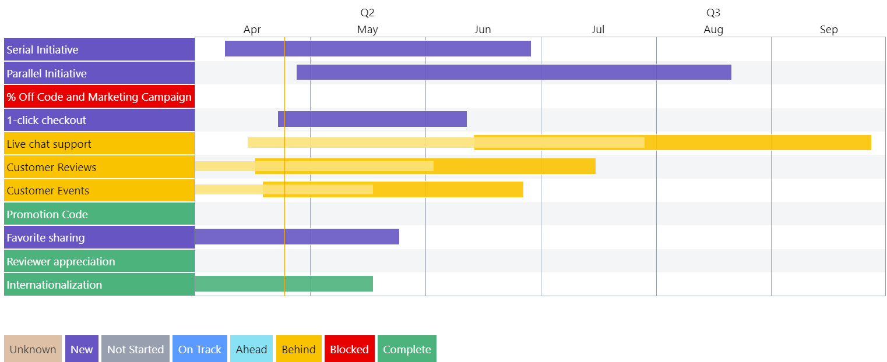
Notice, the report:
Can break out Dev, QA, and UAT timing
Can indicate which initiatives are delayed
For projects that operate with Releases, “Timeline Report” includes a release view:
The following sections detail:
Why it’s critical to keep Jira the source of truth
Some general guidelines on how the “Timeline Report” behaves
How to make initiatives take on different statuses
How to break out the initiative timing to show dev, qa, and uat timing
How to report on release timing
Let’s learn how to use the “Timeline Report” and why!
The following is the Google Slides presentation for this material:
Keeping Jira the Source of Truth
Too often, Program Managers spend a lot of time gathering dates, times, and statuses from various project teams and assembling them into something a wider audience, typically stakeholders and senior management can understand. This often expresses itself as a PowerPoint slide at a SteerCo meeting.
At best, the time spent producing the PowerPoint slide is inefficient. At worst, the PowerPoint slide becomes the source of truth and limits time spent maintaining and improving the more valuable representation of the plan - the Advanced Roadmap plan.
Timeline Report Guidelines
The Timeline Report’s goal is to help present a simplified representation of the work being done or going to be done. By simplifying, there can sometimes be a conflict between data. For example:
An initiative could be put in a “QA” status, but the development epics are still in progress.
An epic could be “in progress”, but its start date is in the future
When this happens, the tool will provide a browser-console warning about the miss-match:
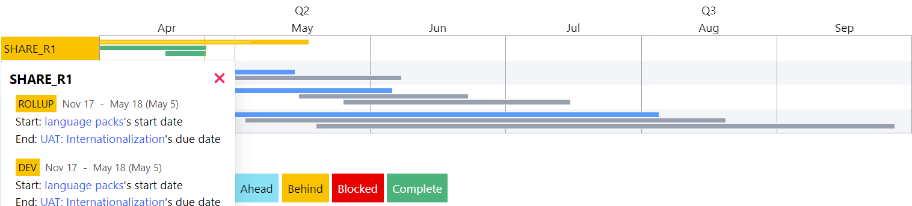
A primary goal of the “Timeline Report” is to keep the timeline up to date, so when there are conflicts between statuses and the start date and due dates, the dates win. For example, all epics with a due date less than the current date will be treated as “complete”.
Connecting the Timeline Report to your Jira instance
The timeline report can be found at https://timeline-report.bitovi-jira.com/ . To use it:
Go to https://timeline-report.bitovi-jira.com/ . The site will redirect to Jira to authenticate the app to read data.
Select the Jira instance you would like the app to connect to:
Notice: The app only has “read” access. Furthermore, it does not save any data.
- Click “Accept” and you will be redirected back to the Jira app.
Change the Reported Status from “Not Started” to “On Track”
Given: A timeline like:
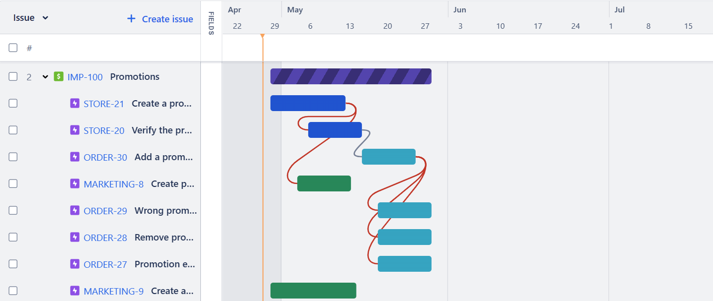
It will produce a report like:
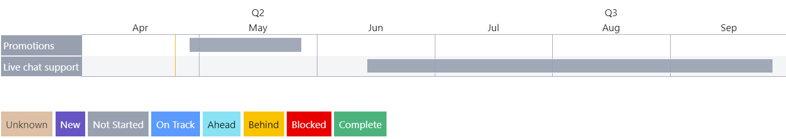
Steps: Move an epic’s start date before the current date:
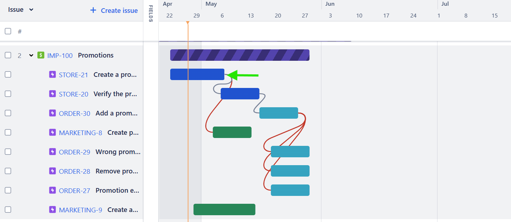
Result: The initiative shows up as “on track” as follows
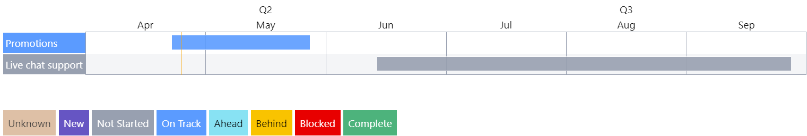
Change the Reported Status to “Behind”
Given: The previous timeline.
Steps: Move an epic so the initiative’s timeline will be delayed
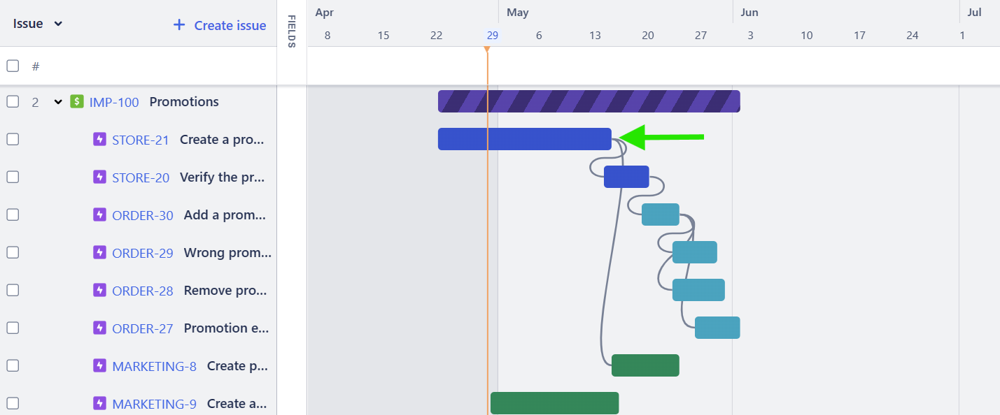
Result: The initiative will be displayed as delayed
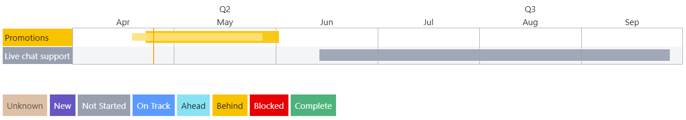
The timer can be used to control the reference point to determine if the initiative is delayed:
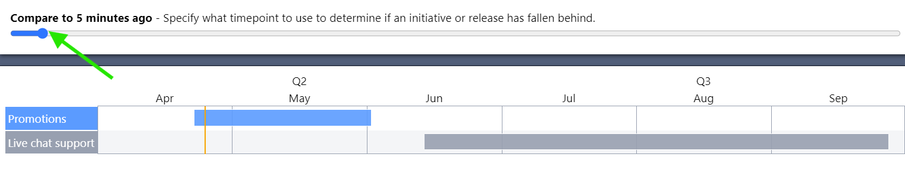
Change the Reported Status to “Blocked”
Given: The previous timeline.
Steps:
Add a blocked status to your epics
Set the status to blocked:
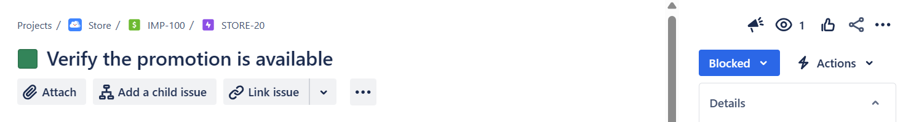
Result:
The reported status is shown as blocked.

Change the Reported Status to “Complete”
Given: The previous timeline.
Steps: Move all of the initiative’s epics to complete before the current time.
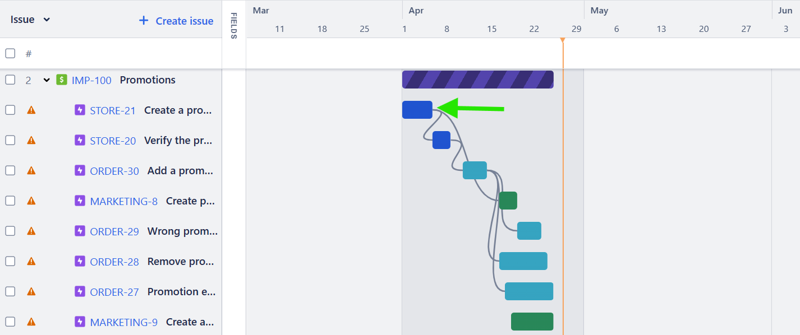
Result: The initiative is shown as “complete”:
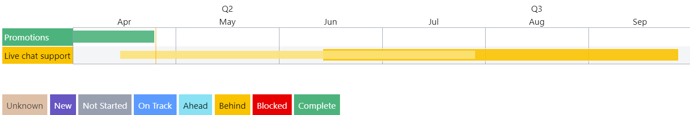
Show a Development, QA, and UAT breakout
It can be nice to see an initiative’s timing as it flow from development, to QA (testing), and finally to User Acceptance Testing (UAT).
Given: The previous timeline.
Steps:
Create epics with a QA and UAT label.
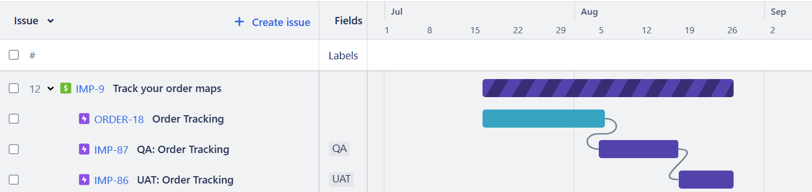
Note: Epics without a QA or UAT label are assumed to be development epics.
Check the “Break out Dev, QA and UAT”
Result: The Dev, QA, and UAT epics timelines are reported individually.
Role Up Into Releases
In some organizations, multiple initiatives are released together as part of a “Release”. The “Jira Timeline” can report release timings as well.
Given: The previous timeline.
Steps:
Create a release
Add the release to your initiatives.
Click “show releases”
Result: The initiatives are shown as part of a release. Add more releases and initiatives to releases to see additional releases.
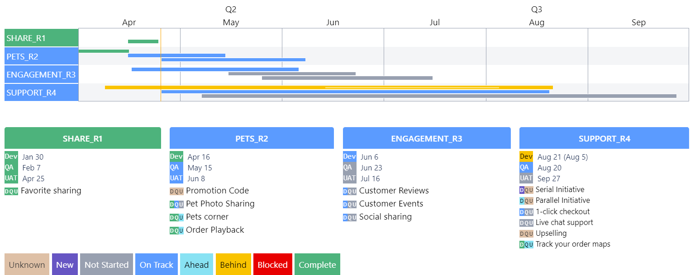
Exercise
In these exercises, you will learn how to change your initiative’s epics so they are reported with the “Timeline Report”.
Step 1: Make your initiative appear as “not started”
Connect your Jira instance to the “Timeline Report”. Ensure your Initiative is visible.
Step 2: Add QA and UAT epics
Add QA and UAT epics to your initiative. Make the timeline show the QA and UAT breakout.
Step 3: Create Releases
Create releases and decide which initiative belongs to which release. Hopefully there are at least 4 initiatives. Each release can have its own initiative.
Step 4: Stagger Releases
Decide which release (and therefore initiatives) should be in which reported status:
Not Started
In Development
In QA
In UAT
Each team member should try to time their epics so each reported release status is present. That is:
There should be one release where
dev=not started,qa=not started,UAT=not startedThere should be one release where
dev=in progress,qa=not started,UAT=not startedThere should be one release where
dev=completed,qa=in progress,UAT=not startedThere should be one release where
dev=completed,qa=completed,UAT=in progress
It will look something like: